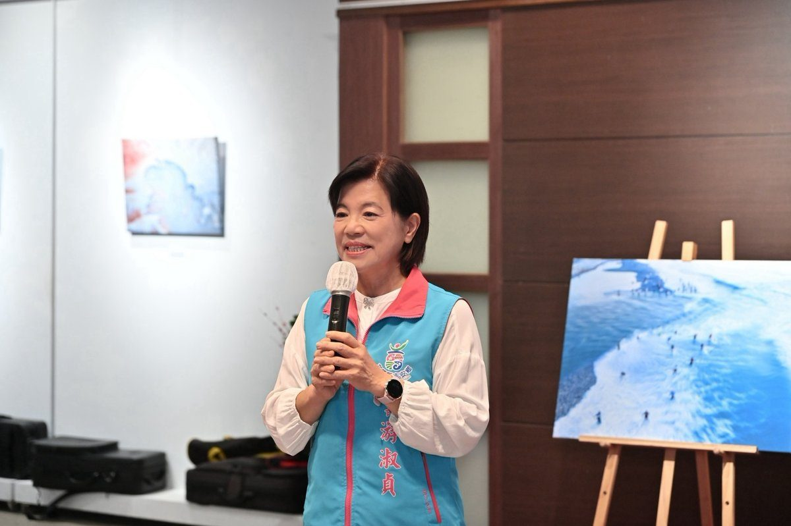

吉安「眼界之外」攝影聯展 游淑貞邀探光影藝境

可樂電子報小編/編輯
吉安鄉好客藝術村本月盛大推出「眼界之外－花蓮縣攝影學會會員聯展」，即日起至8月30日於吉野藝文館展出。鄉長游淑貞日前親臨開幕典禮，高度讚揚藝術家們透過鏡頭記錄生活脈動、刻畫在地風情之美，並誠摯邀請廣大鄉親與全國遊客把握展期，親身感受光影交織的藝術魅力，藉由影像發掘更多值得珍藏的人文故事。

花蓮縣攝影學會自1961年成立以來，六十餘載致力於推廣攝影藝術並培育人才，足跡遍及花蓮山海鄉野及國內外各地。本次聯展由理事長邱福興偕同42位會員，共同呈現43件精選作品，內容包羅萬象，涵蓋晨昏光影、空拍景觀、極光、黑白攝影，乃至阡陌良田、蒸汽火車、山海景致、蓮花生態、璀璨煙火，以及客家與原住民族文化等多元題材，充分展現創作者們敏銳的觀察力與深厚的人文關懷。

展覽現場，參展者親自為觀展民眾導覽，細膩分享創作理念、構圖巧思與光影運用，不僅豐富了民眾對攝影藝術的理解，也提升了文化素養。包括文化局長陳建村、縣政府北區服務中心副主任羅吉秀、立委傅崐迃服務處主任李松年及更生日報社長謝立德等各界藝文人士均蒞臨共襄盛舉，並對作品的豐富構圖與卓越藝術表現給予高度肯定。邱福興理事長指出，「眼界之外」象徵著突破日常視角，期望藉由本次展覽引領觀展者發現生活中更多感動與故事，展出作品如《搏浪》、《太平洋的守護者》、《潮聲初醒》等，皆深入刻畫自然景觀與人文紀實。

游淑貞鄉長強調，一張照片不僅能凝結稍縱即逝的瞬間，更承載著土地、人文與時代的深刻記憶。透過攝影創作者的獨特視角，平凡景物亦能展現其不凡價值。她表示，吉安好客藝術村每月皆推出多元展演活動，已逐步發展成為地方重要的藝文交流平台，未來將持續攜手文化局及各地方藝文團體，致力完善展館設施與導覽服務，進而打造更優質的藝文環境，期盼讓更多民眾有機會親近藝術、體驗文化，拓展視野並感受藝術的溫暖。